PenPen!
This project (PenPen) is a new take on a smart pen. This pen has all of the standard smart pen features, and then a few more. What separates this pen from other smart pens is its control panel and functional back.
The Control Panel
-
First, the screen. This shows the user the following information (left to right):
- A preview of the brush
- The 'control-mode'
- Icons for the 2 selected macros
-
Next, there are 6 total buttons, separated into a top and bottom row.
- Top left and bottom left buttons activate the selected macros
- Top middle and bottom middle buttons change the control-mode, which lets you edit properties which can be controlled by…
- …top right and bottom right buttons, which increment or decrement the property of the selected control mode.
Smart Back
Besides the control panel, the back of the pen is also 'smart'.
-
The user can move a dial to point to an icon which determines how the back
will behave. It can…
- Highlight (a translucent rectangle like pen mode)
- Erase (highly requested feature that lets the user erase their drawing with the back of the pen)
- Eyedrop (since this is on the physical pen, the eyedropper tool will make the pen take the color of whatever real world object it touches)
Design Work
Before my main design emerged, I went through a series of interviews, sketching, and feedback.
The first thing I did was interview smart pen users of all kinds. I figured out the essence of what they like and dislike about smart pens. I then figured out everything the users will need and created design challenges out of them.
After finding my design challenges, I 'solved' three of them with 10-plus-10 sketches. Here they are!
Design Challenge #1 - The pen can be used by artists and note takers efficiently
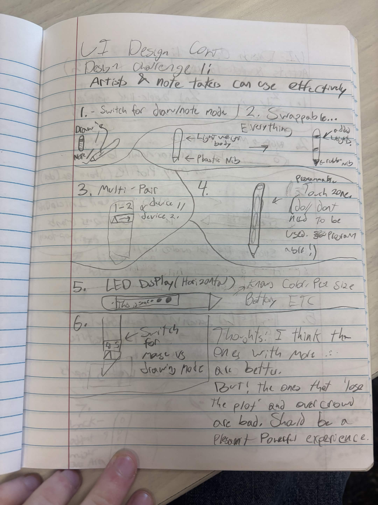
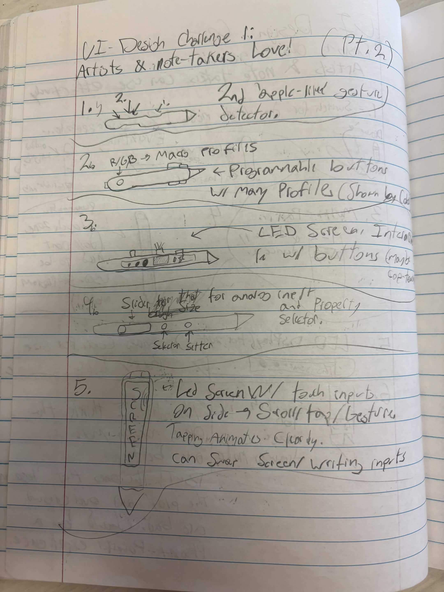
Design Challenge #2 - The pen has different modes for different users
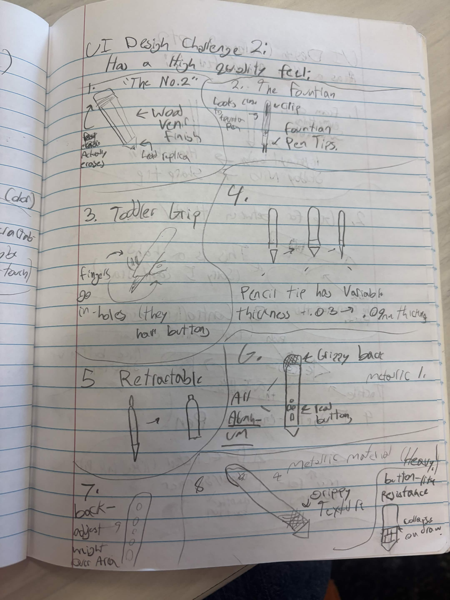
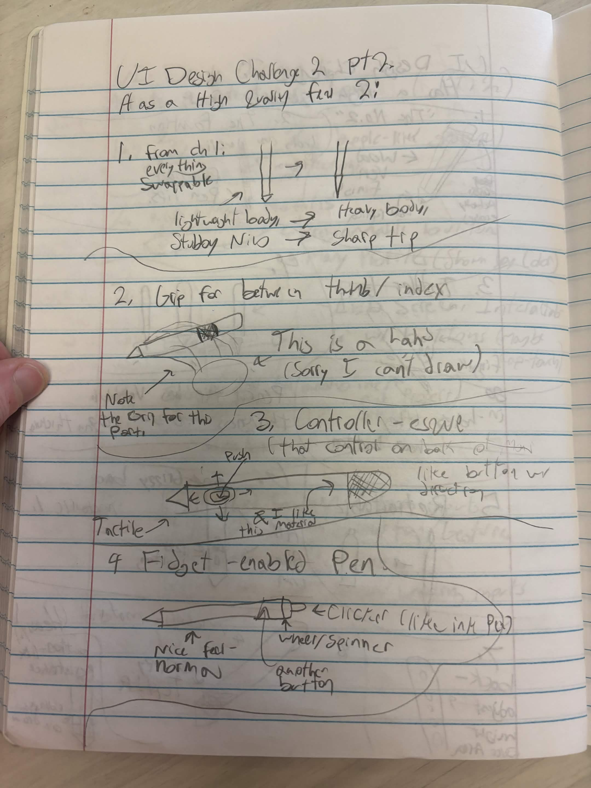
Design Challenge #3 - The pen has a high quality feel
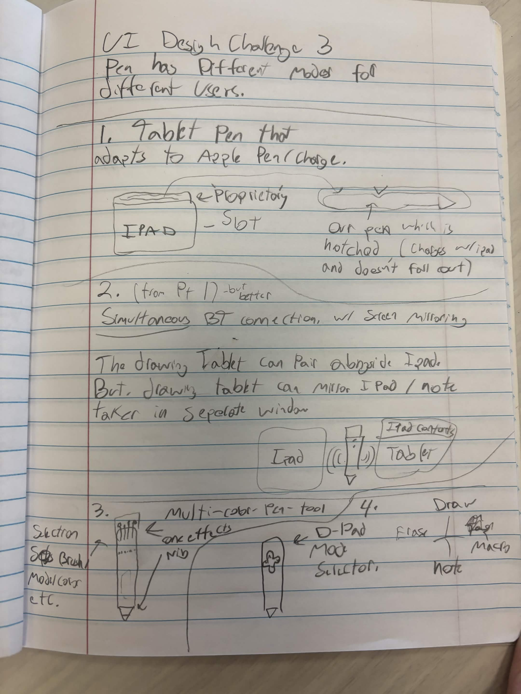
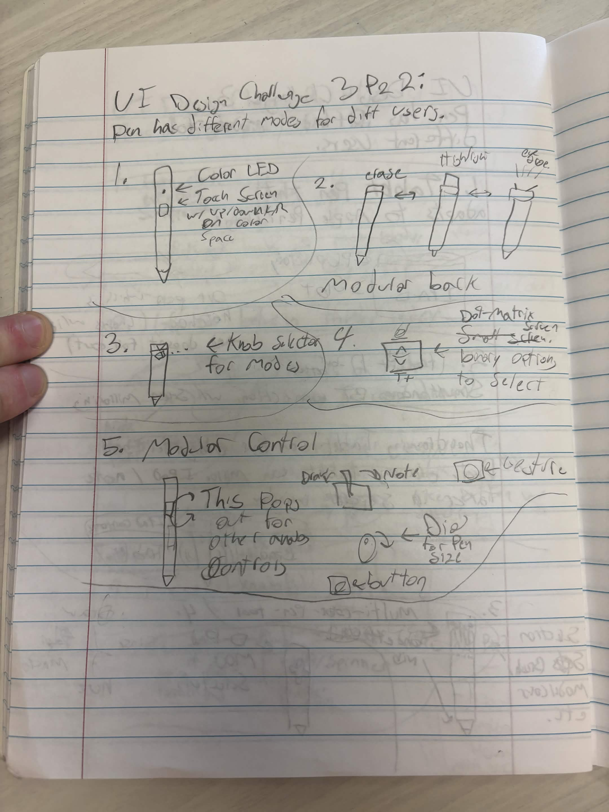
After getting feedback (very valuable) on the results of the sketches, I put together a prototype on draw.io:
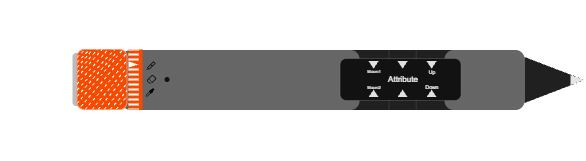
There are two main components in my design: the control panel and the back feature.
Control Panel Design
- This is a design with real buttons that allows the user to quickly change the attributes of their brush, and the pen itself.
- There are 6 buttons. The two left buttons have 'neutral' icons on them since they activate the macros. The remaining 4 buttons allow the user to select what they are controlling, and increment or decrement that value.
- Users typically needed just a minute to fiddle around with the screen to understand what is going on. There is a lot they can learn but the idea is very simple.
Back Feature Design
- The back of the pen is some advanced hardware that has tons of real functionality (everything you would want in a pen-shaped object).
- There is a dial which points to the mode the back will be in.
- The most requested feature is on here (back to erase).
- But users have the option to do more if they would like.
- Such as use it as an eyedropper tool (artists), or highlight (note-takers).
How I implemented this application
This is my first Svelte project, so it took me a second to figure out how to
best structure the code. I decided that I was going to try to make one
singleton instance of a class (penClass) to represent the whole
Pen. Svelte allows you to do this with 'setContext' and 'getContext'. Using
these methods I allowed the sub components to interact with the singleton (set data
and get data).
Even though I was following a singleton pattern, I still tried to make all of
the code very modular. All of the sub-components have their individual
functionality in the <script> section of their
.svelte file. Also, I tried to avoid any global styling and keep
all the style information in each component (also using ratios where
possible).
Fun Components
While developing, I was able to get creative with a few of my components / implementations.
Scrolling Background
I am hoping that some of you reading this may wonder how exactly the background of this website renders. The truth is that none of the divs are actually moving. There is a background that scrolls, but it is actually just a gif. But not any gif! I could only find one moving grid pattern online (I know, right), and I used an editor to transform the gif into the background.
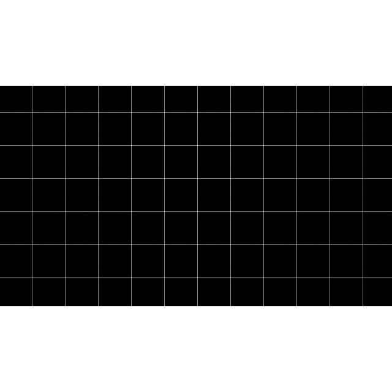
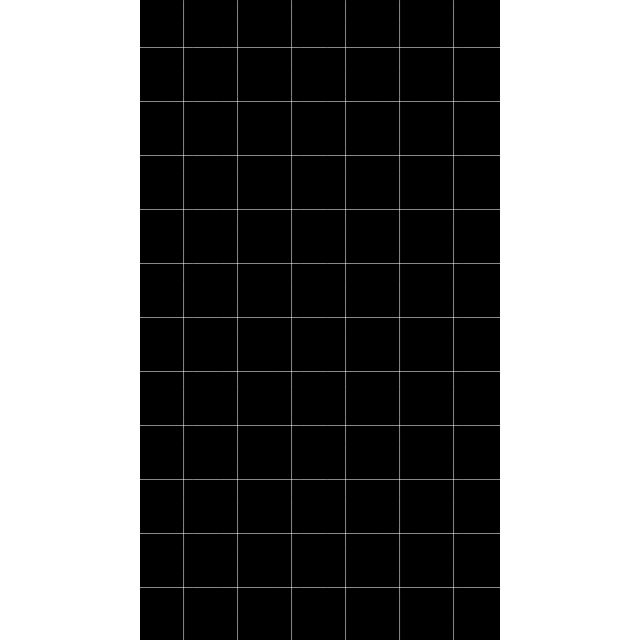
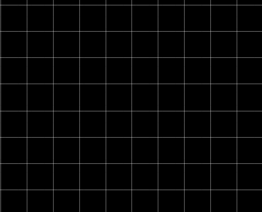
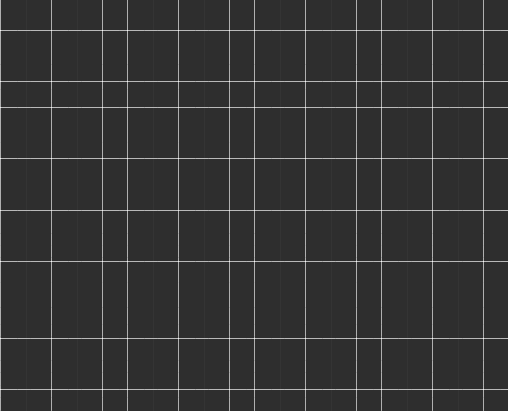
Okay, so the background moves. What about the drawing? The entire canvas is on a timer. Each time it fires, the script creates a new invisible canvas element and copies the current one over there. Once that is done, the main canvas is cleared, and the copied content is drawn onto the main canvas one increment higher. It is then drawn a second time below so that the content is wrapped. Boom - whole thing moving up and down :)
Macro Buttons
Even though the control panel was kind of a pain to implement, I enjoyed coming up with a few macros. All of the macros are super powerful even in the context of my webpage. If this were a real smart pen on a real drawing interface, I think the macros could be the best part of the pen. I imagine that undo and redo would be super popular but users could just take this so far. The implementation is pretty straightforward, but it was a fun way to allow the user to do a lot more.
Future work
Since this project is also a little bit of a drawing environment, adding more features would be a lot of work. If I could add one thing, I would add undo and redo macros. I think artists love that. The second thing I would want to add would be a color-palette profile. If there was a way to cycle through the eye-droppered colors, I think artists would love it! Onto the elements that are more related to this project, I would want to add some textures to my pen. I did give it a little try on the back of the pen, but it washed out the color more than it made it look metallic. Also, I would want to do a little more with the status LED I have. Right now it really just indicates that it's on, but with some more work I am sure I could make it a little more reactive. There are a few more smaller things I would want to try also: I wish I made the screen more animated. I wish I could add some customization options for the background and pen appearance. I never got too knowledgeable on how the chroma library works so sometimes the color editing loses the pen's hue and washes it out.
AI documentation
Even though using AI would speed up my development, I used minimal AI. I avoided using it because I think it's a cheap shortcut when used in learning settings. I would say that around 4% of my code is AI generated. None of my code was vibe coded or done by an agent. I used AI as more of a better Google to see what APIs I have access to and things like that. For example, to figure out what methods were out there to copy the canvas, I asked AI. But I figured out how to make the background wrap myself.
Demo video and links
- Demo video: https://youtu.be/OZOoG_xfuJE
- Hosted application: https://uipenpen.vercel.app/
- Source code: GitHub repository